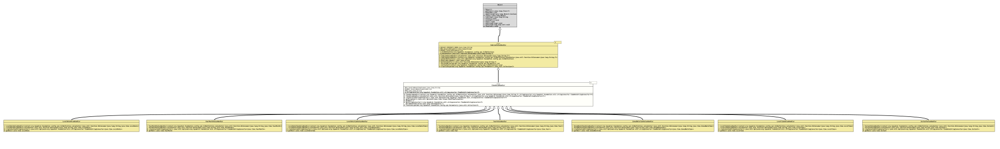

Class TimeValueHandler<T extends Temporal>
java.lang.Object
org.tquadrat.foundation.config.cli.CmdLineValueHandler<T>
org.tquadrat.foundation.config.cli.TimeValueHandler<T>
- Type Parameters:
T- The type that is handled by this class.
- Direct Known Subclasses:
InstantValueHandler, LocalDateTimeValueHandler, LocalDateValueHandler, LocalTimeValueHandler, YearMonthValueHandler, YearValueHandler, ZonedDateTimeValueHandler
@ClassVersion(sourceVersion="$Id: TimeValueHandler.java 1061 2023-09-25 16:32:43Z tquadrat $")
@API(status=INTERNAL,
since="0.0.1")
public abstract class TimeValueHandler<T extends Temporal>
extends CmdLineValueHandler<T>
The abstract base class for implementations of
CmdLineValueHandler
for types that extend
Temporal.
Except for
InstantValueHandler,
the format for the date/time data on the command line can be modified by
setting the
format
parameter of the
@Option
or
@Argument
annotation. The value for that parameter has to conform the requirements as
for
DateTimeFormatter.ofPattern(String).
All implementations do allow the value "now" instead of a concrete date/time value; this will be interpreted always as the current date and/or time.
- Author:
- Thomas Thrien (thomas.thrien@tquadrat.org)
- Version:
- $Id: TimeValueHandler.java 1061 2023-09-25 16:32:43Z tquadrat $
- Since:
- 0.0.1
- See Also:
- UML Diagram
-

UML Diagram for "org.tquadrat.foundation.config.cli.TimeValueHandler"
{kind=link}
-
Field Summary
FieldsModifier and TypeFieldDescriptionprivate final TimeDateStringConverter<T> The implementation ofStringConverterthat is used to translate the String value from the command line into the desired object instance.static final StringThe error message about an invalid date/time on the command line: "\'%1$s\' cannot be parsed as a valid date/time".static final intThe resource bundle key for the message about an invalid date/time String on the command line.static final String'"now"' stands for the current time.Fields inherited from class CmdLineValueHandler
DEFAULT_PROPERTY_NAME, MSG_InvalidParameter, MSGKEY_InvalidParameter -
Constructor Summary
ConstructorsModifierConstructorDescriptionprotectedTimeValueHandler(BiConsumer<String, T> valueSetter, TimeDateStringConverter<T> stringConverter) Creates a newTimeValueHandlerinstance.protectedTimeValueHandler(CLIDefinition context, BiConsumer<String, T> valueSetter, TimeDateStringConverter<T> stringConverter) Creates a newTimeValueHandlerinstance. -
Method Summary
Modifier and TypeMethodDescriptionprotected abstract Optional<TimeDateStringConverter<T>> Creates a non-standard string converter that uses the provided format.protected final Optional<DateTimeFormatter> Creates an instance ofDateTimeFormatterfrom the provided format.protected abstract TgetNow()Get the current time.protected final TimeDateStringConverter<T> Returns the implementation ofStringConverterthat is used to translate the String value from the command line into the desired object instance.private final TparseDateTime(CharSequence value) Parses the given String to an instance ofTemporal.protected final Collection<T> translate(Parameters params) Translates the command line values that can be referenced via theparamsargument to the target type.Methods inherited from class CmdLineValueHandler
getCLIDefinition, getPropertyName, getValueSetter, parseCmdLine, setContext
-
Field Details
-
MSG_InvalidDateTimeFormat
The error message about an invalid date/time on the command line: "\'%1$s\' cannot be parsed as a valid date/time".- See Also:
-
MSGKEY_InvalidDateTimeFormat
The resource bundle key for the message about an invalid date/time String on the command line.- See Also:
-
NOW
-
m_StringConverter
The implementation ofStringConverterthat is used to translate the String value from the command line into the desired object instance.
-
-
Constructor Details
-
TimeValueHandler
protected TimeValueHandler(CLIDefinition context, BiConsumer<String, T> valueSetter, TimeDateStringConverter<T> stringConverter) Creates a newTimeValueHandlerinstance.- Parameters:
context- The CLI definition that provides the context for this value handler.valueSetter- TheConsumerthat places the translated value to the property.stringConverter- The implementation ofStringConverterthat is used to translate the String value from the command line into the desired object instance in case no formatter is provided.
-
TimeValueHandler
protected TimeValueHandler(BiConsumer<String, T> valueSetter, TimeDateStringConverter<T> stringConverter) Creates a newTimeValueHandlerinstance.- Parameters:
valueSetter- TheConsumerthat places the translated value to the property.stringConverter- The implementation ofStringConverterthat is used to translate the String value from the command line into the desired object instance in case no formatter is provided.
-
-
Method Details
-
createCustomStringConverter
Creates a non-standard string converter that uses the provided format.- Returns:
- An instance o
Optionalthat holds theStringConverter.
-
getFormatter
Creates an instance ofDateTimeFormatterfrom the provided format.- Returns:
- An instance of
Optionalthat holds the formatter. - See Also:
-
getNow
-
getStringConverter
Returns the implementation ofStringConverterthat is used to translate the String value from the command line into the desired object instance.- Returns:
- The string converter.
-
parseDateTime
Parses the given String to an instance ofTemporal.- Parameters:
value- The String to parse.- Returns:
- The time/date value.
- Throws:
IllegalArgumentException- The given value cannot be parsed to aTemporal.
-
translate
Translates the command line values that can be referenced via theparamsargument to the target type.- Specified by:
translatein classCmdLineValueHandler<T extends Temporal>- Parameters:
params- The command line values to translate.- Returns:
- A collection with the result; each entry in the collection corresponds to one value from the command line.
- Throws:
CmdLineException- The given parameters cannot be parsed to the target type.
-